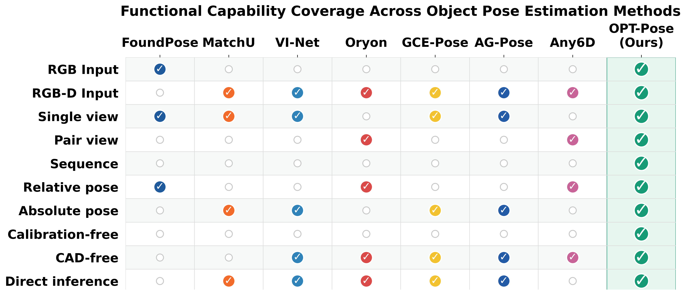
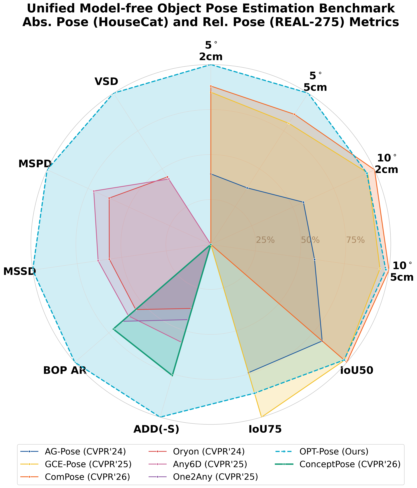
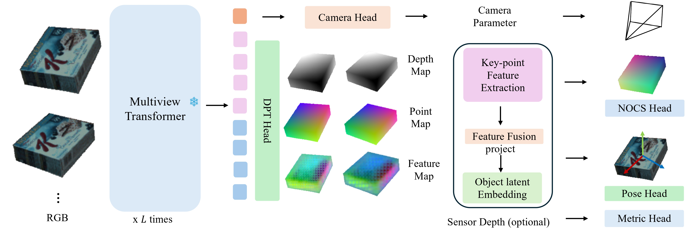
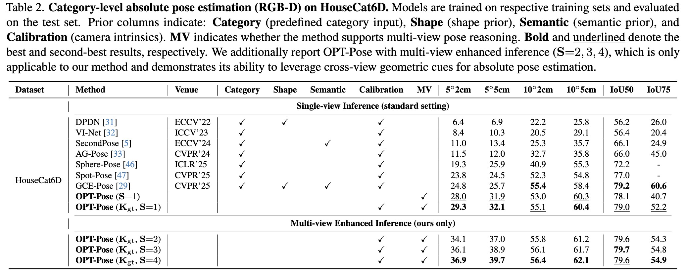
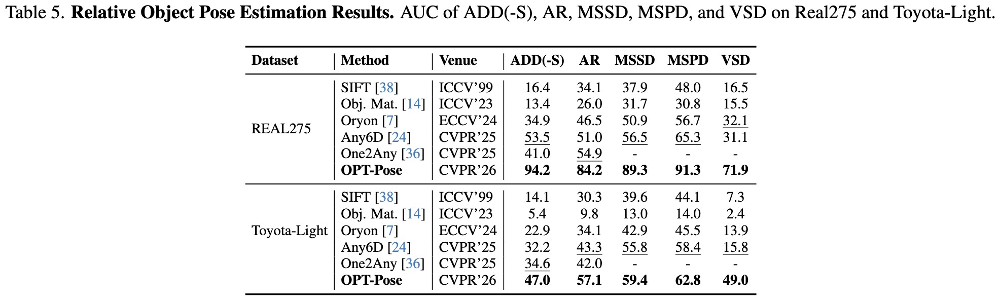

Object Pose TransformerUnifying Unseen Object
Pose Estimation
Absolute and relative object pose.
One transformer. Flexible views. No CAD models.
A unified view of
object pose.
Abstract
Learning model-free object pose estimation for unseen instances remains a fundamental challenge in 3D vision. Existing methods typically fall into two disjoint paradigms: category-level approaches predict absolute poses in a canonical space but rely on predefined taxonomies, while relative pose methods estimate cross-view transformations but cannot recover single-view absolute pose. In this work, we propose Object Pose Transformer (OPT-Pose), a unified feed-forward framework that bridges these paradigms through task factorization within a single model. OPT-Pose jointly predicts depth, point maps, camera parameters, and normalized object coordinates (NOCS) from RGB inputs, enabling both category-level absolute SA(3) pose and unseen-object relative SE(3) pose. Our approach leverages contrastive object-centric latent embeddings for canonicalization without requiring semantic labels at inference time, and uses point maps as a camera-space representation to enable multi-view relative geometric reasoning. Through cross-frame feature interaction and shared object embeddings, our model leverages relative geometric consistency across views to improve absolute pose estimation, reducing ambiguity in single-view predictions. Furthermore, OPT-Pose is camera-agnostic, learning camera intrinsics on-the-fly and supporting optional depth input for metric-scale recovery, while remaining fully functional in RGB-only settings. Extensive experiments on diverse benchmarks (NOCS, HouseCat6D, Omni6DPose, Toyota-Light) demonstrate state-of-the-art performance in both absolute and relative pose estimation tasks within a single unified architecture.


Geometry and canonicalization.
In a single forward pass.

Absolute pose. Stronger with multiple views.
Relative alignment of unseen objects.
Single-view absolute pose, multi-view enhancement, and unseen-object alignment in one framework.
Single-view absolute pose
Canonical object pose from a single observation, evaluated with RGB-D input on HouseCat6D and ROPE.
HouseCat6D
RGB-D
ROPE / Omni6DPose
RGB-D| Method | IoU25 | IoU50 | IoU75 | 5° 2cm | 5° 5cm | 10° 2cm | 10° 5cm |
|---|---|---|---|---|---|---|---|
| GenPose++ | 39.64 | 18.68 | 1.28 | 8.02 | 11.90 | 16.58 | 24.87 |
| CPPF++ | 38.19 | 17.18 | 1.07 | 9.43 | 14.20 | 18.28 | 27.66 |
| OPT-Pose (Kgt) | 40.06 | 21.03 | 2.73 | 9.08 | 13.14 | 17.62 | 25.46 |
Multi-view relative reasoning further improves absolute pose
Cross-view geometric constraints reduce single-view ambiguity. Increasing the number of input views improves absolute pose accuracy without retraining.
HouseCat6D · 1 to 4 views
RGB-D| Method / views | 5° 2cm | 5° 5cm | 10° 2cm | 10° 5cm | IoU50 | IoU75 |
|---|---|---|---|---|---|---|
| OPT-Pose (Kgt, S=1) | 29.3 | 32.1 | 55.1 | 60.4 | 79.0 | 52.2 |
| OPT-Pose (Kgt, S=2) | 34.1 | 37.0 | 55.8 | 61.2 | 79.6 | 54.3 |
| OPT-Pose (Kgt, S=3) | 36.1 | 38.9 | 56.1 | 61.7 | 79.7 | 54.8 |
| OPT-Pose (Kgt, S=4) | 36.9 | 39.7 | 56.4 | 62.1 | 79.6 | 54.9 |
RGB-only absolute pose on REAL275
Absolute pose estimation without sensor depth, evaluated using scale-agnostic metrics.
REAL275
RGB only| Method | NIoU75 | 5° 0.2d | 5° 0.5d | 10° 0.2d | 10° 0.5d | 0.2d | 5° | 10° |
|---|---|---|---|---|---|---|---|---|
| MSOS | 0.7 | – | – | 3.3 | 15.3 | 10.6 | – | 17.0 |
| OLD-Net | 0.4 | 0.9 | 3.0 | 5.0 | 16.0 | 12.4 | 4.2 | 20.9 |
| DMSR | 9.5 | 15.1 | 23.7 | 25.6 | 45.2 | 35.0 | 27.4 | 52.0 |
| LaPose | 15.8 | 15.7 | 21.3 | 37.4 | 57.4 | 46.9 | 23.4 | 60.7 |
| GIVE-Pose | 20.8 | – | – | 44.6 | 64.8 | 46.9 | – | 67.8 |
| UniDet | 19.2 | 25.1 | 31.8 | 43.7 | 66.1 | 53.5 | 32.1 | 68.8 |
| OPT-Pose | 11.1 | 24.3 | 52.2 | 44.1 | 82.3 | 56.4 | 52.3 | 82.5 |
Unseen-object relative pose alignment
Align unseen objects across views using camera-space geometry, evaluated on REAL275 and Toyota-Light.
REAL275 + Toyota-Light
RGB-D
Build on this work.
If you find OPT-Pose useful, please cite our paper.
@InProceedings{Li_2026_CVPR,
author = {Li, Weihang and Garattoni, Lorenzo and Despinoy, Fabien and Navab, Nassir and Busam, Benjamin},
title = {Object Pose Transformer: Unifying Unseen Object Pose Estimation},
booktitle = {Proceedings of the IEEE/CVF Conference on Computer Vision and Pattern Recognition (CVPR) Findings},
month = {June},
year = {2026},
pages = {436-446}
}